Module 3 · Electronic Spreadsheet Fundamentals
Make every value the right type, then make the whole table easy to read, print and check.
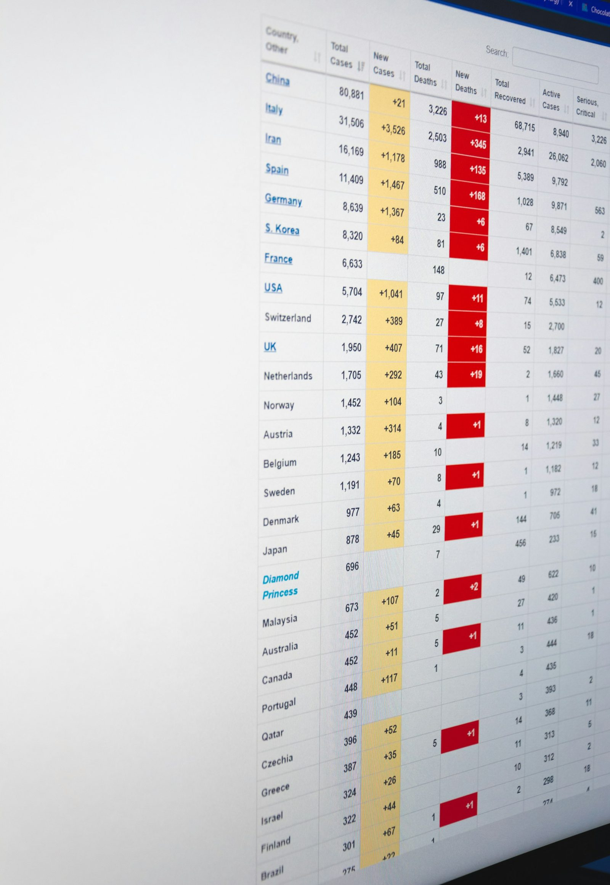
Welcome back. Open the inventory you saved in 3.1, Lab3 Inventory. We'll work on that same file the whole time.
This topic has two halves. First, data types: making sure the sheet knows a number is a number and a date is a date. Second, formatting: peso signs, bold headers, borders, colours, and a rule that highlights items we need to reorder. Lab 3 requires at least one column formatted as Currency or Date, so this topic earns you points.
Warm-up · type A or B in the chat
A
| A | B | C | D | |
|---|---|---|---|---|
| 1 | Item | Unit | Qty | Unit Cost |
| 2 | Bond paper, A4 | ream | 25 | 245 |
| 3 | Bond paper, lo | ream | 30 | 265 |
| 4 | Ballpen, black | box of 12 | 10 | 96 |
| 5 | Folder, long | pack of 1 | 4 | 520 |
B
| A | B | C | D | |
|---|---|---|---|---|
| 1 | Item | Unit | Qty | Unit Cost |
| 2 | Bond paper, A4 | ream | 25 | ₱245.00 |
| 3 | Bond paper, long | ream | 30 | ₱265.00 |
| 4 | Ballpen, black | box of 12 | 10 | ₱96.00 |
| 5 | Folder, long | pack of 100 | 4 | ₱520.00 |
Ask for A or B in the chat. Everyone picks B, of course. Then ask: "What exactly is different?"
Collect answers: bold coloured header, peso signs with two decimals, full words visible because the columns are wide enough, borders, and one row highlighted in red. Tell them: by the end of this topic your inventory will look like B, and you'll know why each change matters, not just how to click it.
By the end of this topic
Text, number, currency, date, percentage, and spot numbers stored as text.
Currency ₱, dates, alignment, wrap, bold, borders, fill, freeze panes, conditional formatting.
Fix extra spaces, mixed units, typed totals and blank rows before you calculate.
Three goals: types, format, clean. The order matters. We fix the types first, because no amount of nice colours can rescue a number that the sheet thinks is text.
Point to the Lab 3 line. Formatting Unit Cost and Total Cost as Currency with the peso sign satisfies it today, so nobody should leave this topic without it.
Data types
Names, units, remarks.
Bond paper, A4
Counts you can add.
25
Money, with ₱ and 2 decimals.
₱245.00
Days you can sort and subtract.
Nov 1, 2026
Parts of a whole.
25% = 0.25
Go through the five types with examples from their work: names and remarks are text; quantities are numbers; costs are currency; dates received are dates; "percent of target" is a percentage.
Teach the alignment test now; it's the fastest check there is. Ask them to look at their inventory: are the Qty and Unit Cost numbers on the right? If anyone sees a number on the left, have them type it again.
Key idea
A format changes how a value looks. The value inside stays the same, and the formula bar shows it.
| You type | Format | The cell shows |
|---|---|---|
| 245 | Currency ₱ | ₱245.00 |
| 0.25 | Percentage | 25% |
| 2026-11-01 | Long date | Sunday, November 1, 2026 |
| 1234.5 | Number, comma | 1,234.50 |
Analogy: same employee, different uniform on Monday and Friday. Still the same person. A format is a uniform for a value.
So never type the peso sign or commas yourself; type 245 and let the format dress it as ₱245.00. Typed symbols can turn a number into text. Fun fact for the curious: behind the scenes Excel stores a date as a day count, so November 1, 2026 is really the number 46327. That's why dates can be sorted and subtracted.
The trap
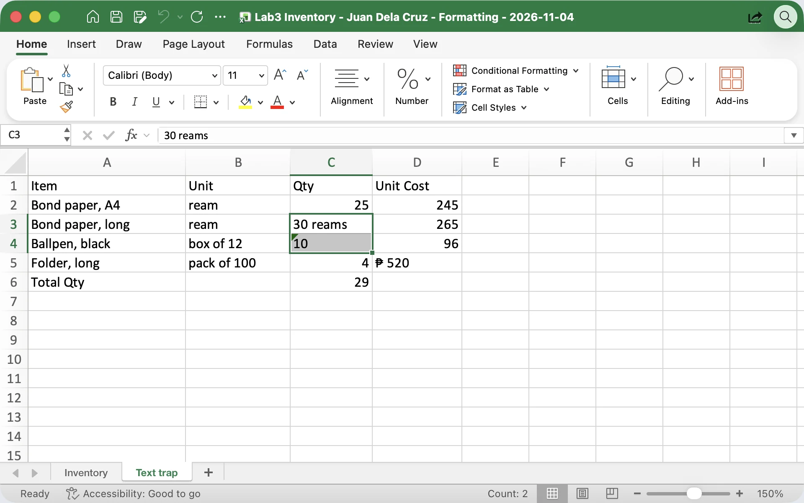
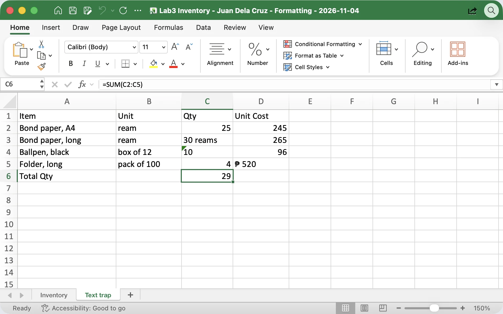
Microsoft Excel for Mac, sample Lab3 Inventory (Text trap sheet). Same green triangle in Excel for Windows.
This is the number one reason totals come out wrong in office files. SUM quietly skips text. In the sample, C6 shows 29 when the real total is 25 + 30 + 10 + 4 = 69, and nobody notices until the report is signed.
Explain the green triangle: Excel's warning that a number is stored as text, common when data is copied from a system export or a PDF. Then the exception: phone numbers and TINs are identifiers, not quantities. Store them as text so the leading zero stays.
Format the money columns
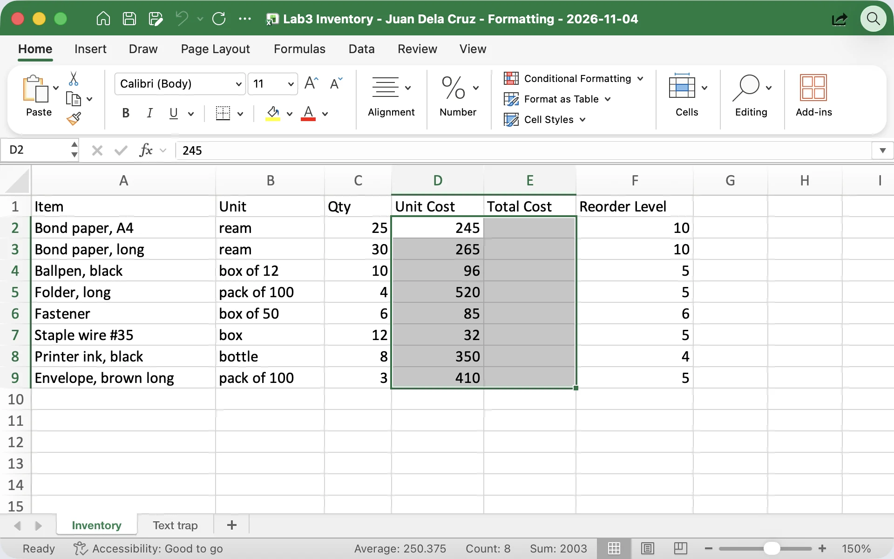
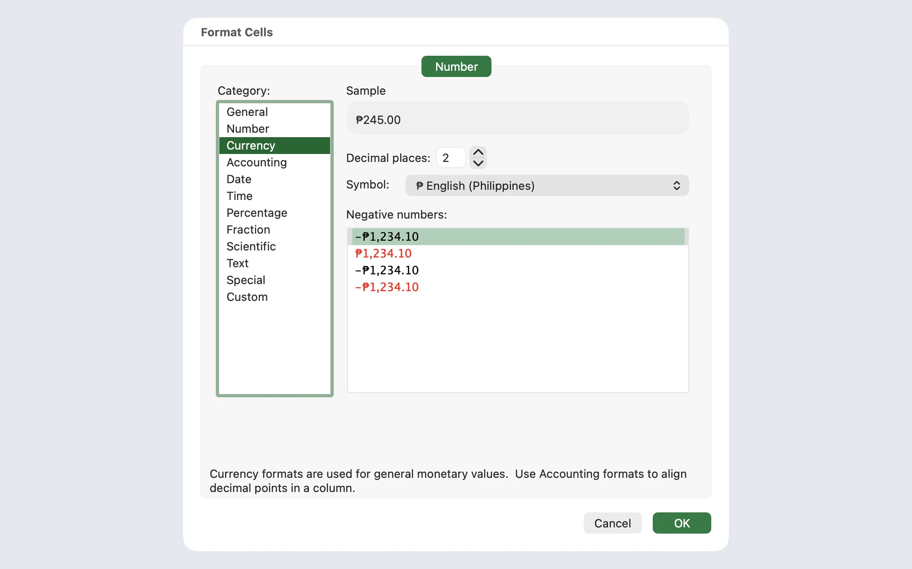
Microsoft Excel for Mac, sample Lab3 Inventory. On Windows, Ctrl+1 opens the same Format Cells window (Number tab).
Demo in Excel with Ctrl+1, the Format Cells window. Point out the formula bar: it still says 245. Only the look changed.
We format column E now, while it's empty, so the totals arrive already in pesos in Topic 3.3. If someone's quick Currency button shows a dollar sign, that's their Windows region setting: open Ctrl+1 and pick the peso symbol. Sheets and Calc users, follow the two boxes on the left.
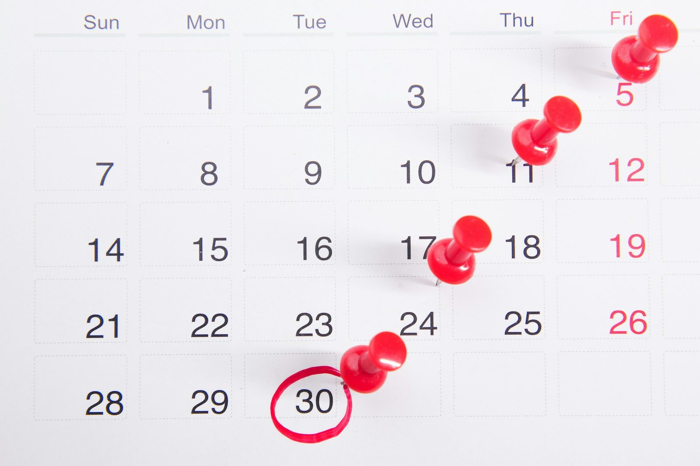
Dates that behave
Dates cause the most confusion because of the month/day order. Some office PCs are set to US style, some to day-first. Typing year-month-day avoids the guessing.
Demo: type 2026-11-01, press Enter, see it jump right. Then Ctrl+1 and try Long Date: Sunday, November 1, 2026, today. Then Ctrl+semicolon for today's date. Ask: "Where do you log dates at work?" Usually the receiving logbook and attendance.
Make the header row stand out
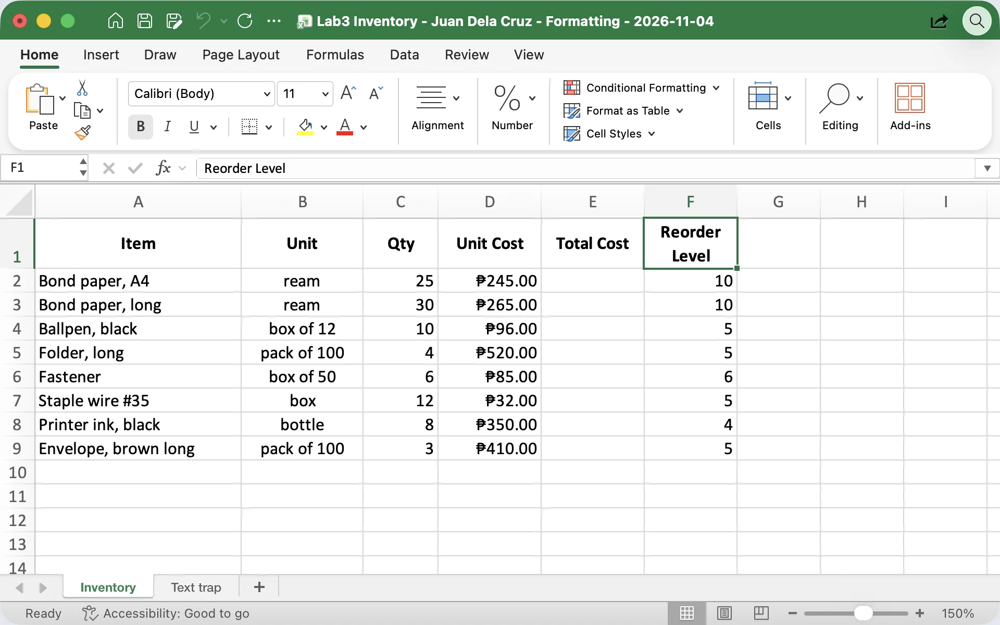
Microsoft Excel for Mac at a narrow window: Center and Wrap Text sit under Alignment. A wider window shows them as buttons, as in Excel for Windows.
Demo on row 1: select it, Ctrl+B, Center. Then click F1, Reorder Level, and turn on Wrap Text: it folds into two lines and column F stays narrow.
A common beginner habit is centering everything. Explain why numbers should stay right-aligned: the ones, tens and hundreds line up, so an examiner can scan a column quickly. Text can be left or centered.
Lines and colour
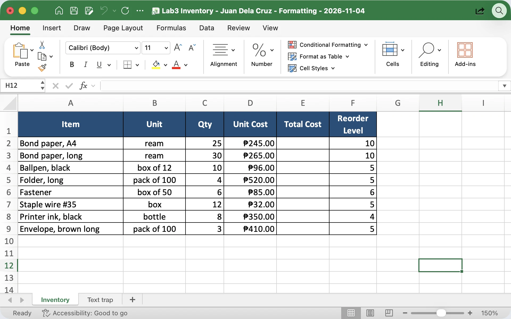
Microsoft Excel for Mac, sample Lab3 Inventory. Same Borders, Fill Color and Font Color buttons on the Windows Home tab.
Demo All Borders, then a dark fill with white text on the header. That's the whole "professional look": one strong header, clean lines, white rows.
Warn against rainbow sheets. Too many colours make a report hard to read and they print as muddy grey on our black-and-white office printers. Show Print Preview with Ctrl+P so they see that borders print and default gridlines don't.
Use sparingly
| A | B | C | |
|---|---|---|---|
| 1 | Monthly Household Budget · November | ||
| 2 | Item | Budget | Actual |
| 3 | Rice | ₱2,500.00 | ₱2,650.00 |
| 4 | CEPALCO electricity | ₱2,800.00 | ₱3,120.00 |
Row 1: A1:C1 merged for a title. OK. Excel: Home › Merge & Center · Sheets: Format › Merge cells · Calc: Format › Merge and Unmerge Cells.
Everyone loves Merge & Center because it looks neat. Show the downside live: merge two cells in the middle of the inventory, then try to sort. Excel complains that merged cells need to be the same size. Undo.
Rule of thumb: merge only a title above the table, never inside it. For Lab 3 we keep headers in row 1 so the formulas in 3.3 and 3.4 match the slides exactly.
Long lists
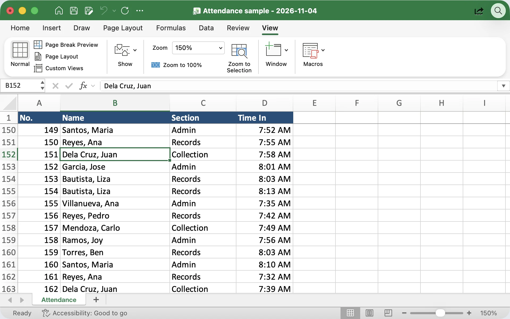
Microsoft Excel for Mac, sample attendance sheet (sample names). Row numbers jump from 1 to 150: row 1 is frozen.
Our inventory is short, so demo freezing on a long list: the sample attendance sheet. Scroll down to row 150 and the headers are still there. Notice the row numbers jump from 1 to 150: that's the sign a row is frozen.
Everyone: freeze the top row of your inventory now. It's a good habit even for short sheets, and it's one menu click in all three apps. The names on screen are sample names only.
Let the sheet warn you
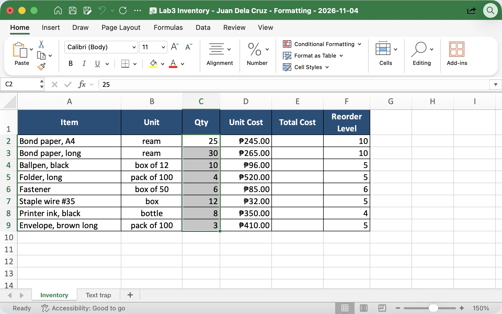
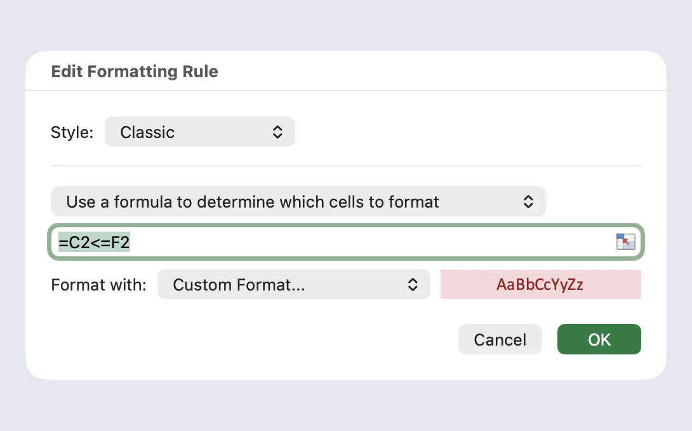
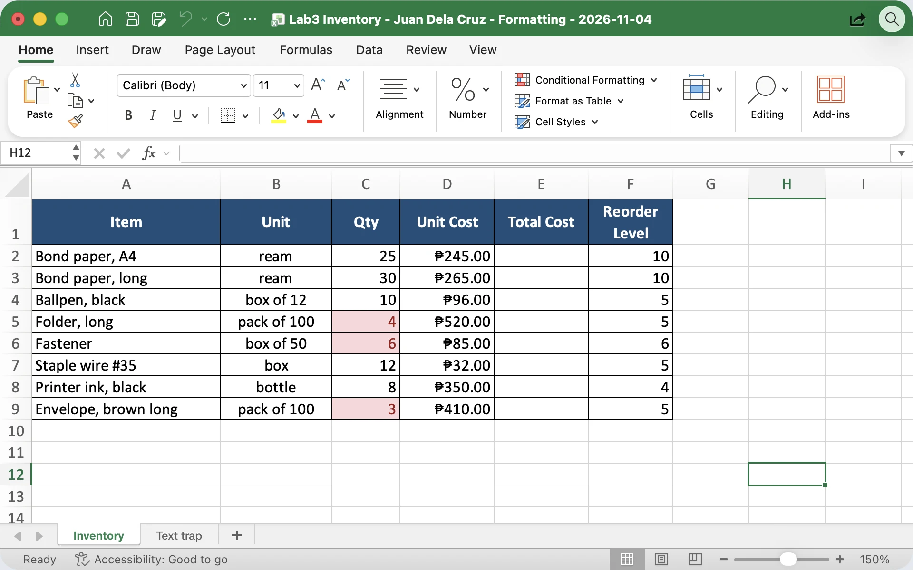
Microsoft Excel for Mac, sample Lab3 Inventory. New Rule opens this window titled New Formatting Rule (shown here when editing the rule).
This is the moment the sheet starts working for you. Type the rule once and the red cells update by themselves every time a quantity changes.
Explain the formula in plain words: "Is the quantity in this row less than or equal to its reorder level?" We write it for row 2; the sheet applies it to every selected row. Fastener is the interesting one: 6 equals 6, so "at or below" catches it. Test: change Folder's Qty to 20, and the red disappears.
Before you calculate
| A | B | C | D | E | |
|---|---|---|---|---|---|
| 1 | Item | Unit | Qty | Unit Cost | Total |
| 2 | Bond paper, A4 | Ream | 25 | 245 | 6125 |
| 3 | |||||
| 4 | Bond paper, long | rm | 30 reams | ₱265 | 7950 |
| 5 | ballpen black | box of 12 | 10 | 96.00 | 960 |
| 6 | Folder, long | pck | 4 | 520 | 2,080 |
A typical "raw dataset" copied from an old file or a printout.
The syllabus lab says participants clean a raw dataset before calculating. Walk through each red cell and ask the group to call out the problem in the chat first.
Typed totals deserve emphasis: 6125 looks right today, but if the price changes it stays 6125 forever. Blank rows break shortcuts like Ctrl+Down and AutoSum's guess of the range. And "rm", "Ream", "ream" look like three different units to any count or filter.
Try it now · hands-on
Exactly 3 Qty cells are red: Folder, Fastener and Envelope.
D2 shows ₱245.00 but the formula bar shows 245.
Start the 12-minute timer. Keep this slide up so they can follow the checklist.
Ask two volunteers to share their screens at the halfway mark. The most common problems: Currency shows a dollar sign (fix in Ctrl+1), the rule highlights the wrong rows (the selection didn't start at C2), or a red cell appears everywhere (they typed =$C$2 with dollar signs; remove them, we explain $ in Topic 3.5).
Where formatting pays off
Same tools, different lists. Ask: "Which of these would save you the most time?" Many will say the reorder highlight, or the red cells on the budget.
Mention the contact-list point again because it bites people: if you type 09171234567 as a number, the leading zero disappears. Format that column as Text before typing, or start with an apostrophe.
Bring it home · Monthly Household Budget
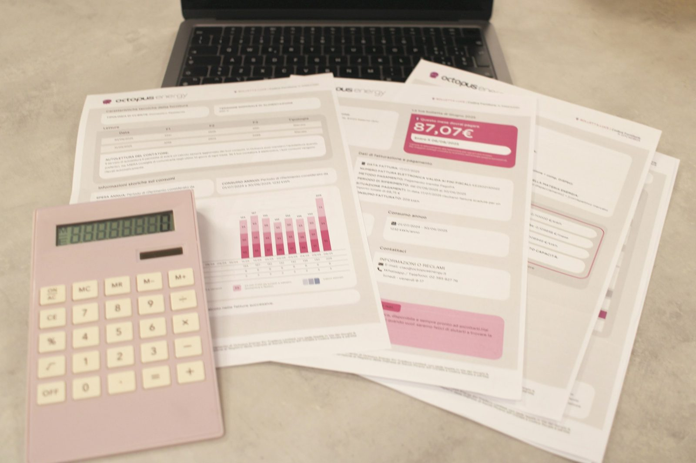
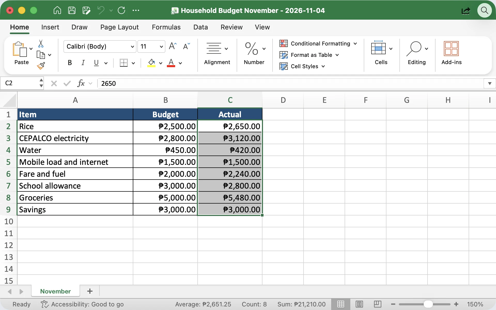
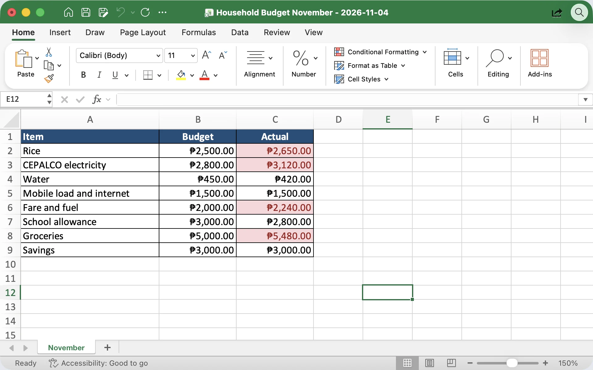
B2: Rice, CEPALCO electricity, Fare and fuel and Groceries Actual cells are light red">Microsoft Excel for Mac. Sample figures. Red = Actual is more than Budget.
This is the personal version of the lab, and the one people actually keep using. The figures are a sample family's month; encourage them to use their own at home.
The rule is the inventory rule turned around: Actual greater than Budget means overspent. Four items go red: rice, CEPALCO, fare and groceries. Ask: "What would you cut next month?" In Topic 3.3 we'll add a Difference column with a formula to see exactly by how much.
Watch · 5 minutes
A uniform, a hidden text trap and a red warning: see how to give every value the right data type, format the money as ₱ currency, and let the sheet flag items to reorder.
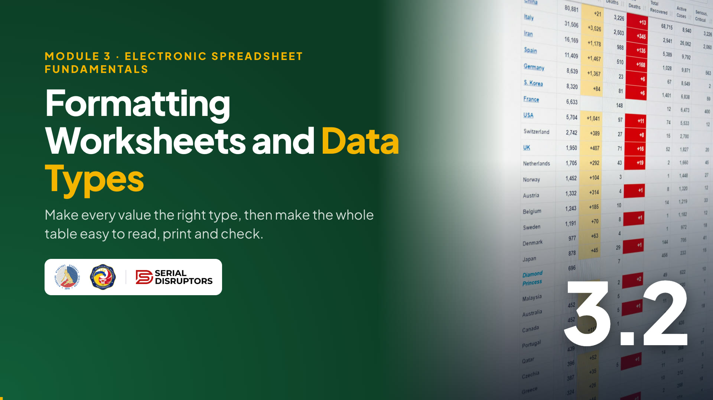
4:55Introduce the video in one or two sentences, then read the While watching task aloud so everyone knows what to look for.
Press → to open the video full screen. In Zoom or Meet, share this tab with computer sound turned on.
Space or K plays and pauses (or click the video). C turns captions on or off; the speed button offers 1.25× and 0.85×. The arrows still move between slides, and the video pauses when you leave this slide.
Length 4:55. Pause anywhere to take a question; captions stay on screen for anyone without sound.
After the video, go back to the While watching task: ask two or three people for their answers.
Quick check · click an answer
Let them answer in the chat first, then click. C: numbers stored as text. The clue is the left alignment.
Use the wrong options to review: A is about #####, B is "formatting is the uniform", D is freeze panes. If many chose B, repeat the key idea: format changes the look, never the value.
Recap · Topic 3.2
Text, number, currency, date, percentage. Numbers on the right; no units or ₱ typed in.
₱ currency, dates, bold header, borders, freeze the top row, and a reorder warning in red.
Trim spaces, one spelling per unit, no typed totals, no blank rows.
Next · 3.3 Basic Formulas (Arithmetic Operators): filling the Total Cost column, the right way.
Summarize: types, format, clean. Check the chat: everyone should have three red cells and peso signs in column D.
Bridge to 3.3: "Column E is formatted and waiting, but it's empty. Next we teach the sheet to multiply Quantity by Unit Cost for us, and why we must never type those totals by hand."